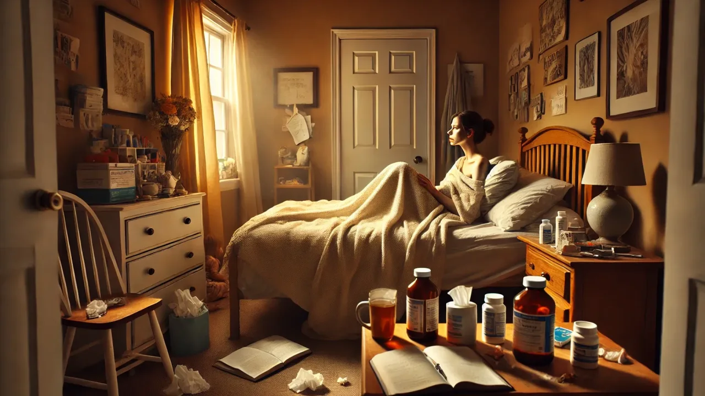
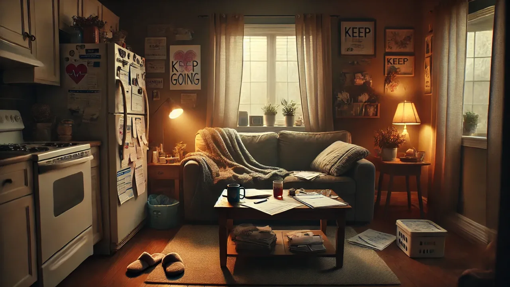
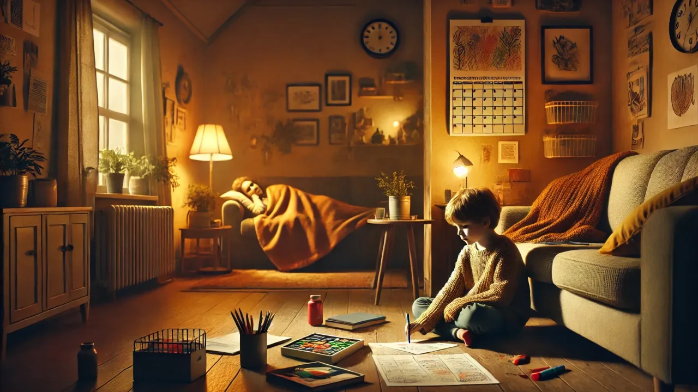
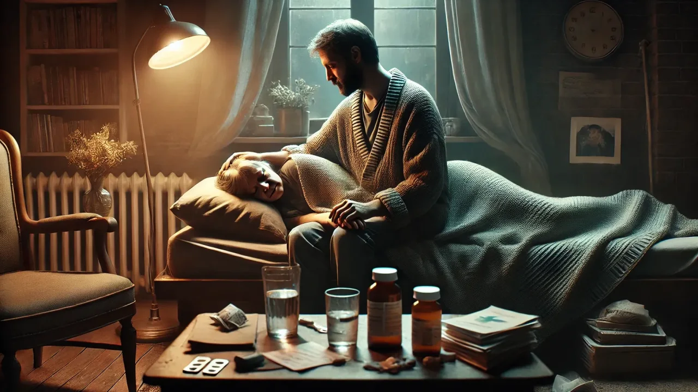

What happens to families when health is stolen
This series isn't really about Lyme. It's about what happens to a whole family when illness moves in — the patient, the kids, the partner, and everyone caught in the ripple. If chronic illness has touched your family — Lyme, Long COVID, ME/CFS, MS, cancer, autoimmune, any of it — these pages are for you.
Dedicated to the families. The ones carrying the diagnosis. The ones carrying the groceries. The ones carrying the insurance paperwork. The ones carrying the fear. The ones carrying each other.
For years, my family lived inside a house that illness had quietly turned into a triage unit. Three of us were sick. All five of us were changed. And in all the searching — for doctors, for treatments, for answers — I could never find the one thing I needed most: someone to say out loud what this was actually doing to us. Not to my body. To my family.
So I wrote it down. The guilt. The grief. The kids who grew up too fast. The marriage that bent but didn't break. The slow, unglamorous work of learning to live again.
These aren't clinical essays. They're the letters I wish someone had handed me. If you're in it right now, start wherever it hurts most — and know that I'm right here with you.

For the person who's actually sick — buried in guilt, grieving themselves while still trying to show up for everyone. You are still enough.
Read this chapter →
Illness doesn't live in a vacuum. It moves into the whole house — reshaping roles, finances, intimacy, and the invisible fractures no scan can see.
Read this chapter →
When the grown-ups are sick, kids become the quiet caregivers. What they notice, how it reshapes childhood, and what they really need.
Read this chapter →
For the partners who said "in sickness and in health" before they knew what it meant. When love becomes logistics — and the quiet heroism of staying.
Read this chapter →
No magical finish line — just tiny, hard-won things that make this life 1% better. Energy budgets, the Spoon Theory, and finding joy anyway.
Read this chapter →Leave your email and I'll send you the complete Chronic Illness Chronicles as a printable keepsake — plus new writing as it comes. It's free, it's honest, and it's for anyone walking this road. No spam, ever.
Thank you — you're in. 💛
Open the full Chronicles → Tip: once it opens, use your browser's Print → Save as PDF to keep it.People assume "A Lyme Life" is about fighting Lyme. It isn't.
My old life — the one I keep catching myself grieving — is gone. Lyme took it. And for a long time I waited to get it back, like it was in a drawer somewhere and I just had to find the right key.
Eventually I understood: there is no old life to return to. There's only the life in front of me, and the choice of whether to actually live it.
That's what A Lyme Life means. It's not about beating the illness. It's about learning to live with what it's leaving behind — and helping other families do the same, so they don't have to figure it out as alone as I did.
Because chronic illness may change a life. But it does not get the final word.
Here's something I keep coming back to: I don't think this story is only mine to tell.
So I want to try something. As these Chronicles grow — maybe one day into a book — I'd love for you to help write it. Not by buying something. By telling me what I got right, what I missed, and what your family is living through that no one else is saying out loud.
If a chapter put words to something you've never been able to explain, tell me. If it missed you entirely, tell me that too. Your story might be the exact thing that reaches the next exhausted person at 2 a.m.
Leave your email up above, and let's keep this going. Two more steps.
— Christina
The Chronicles are for every family touched by illness. But if Lyme is what brought you here, I also help people find real treatment — and I'd be honored to talk, free and with no pressure.
Meet Christina →